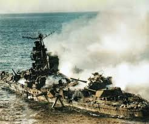
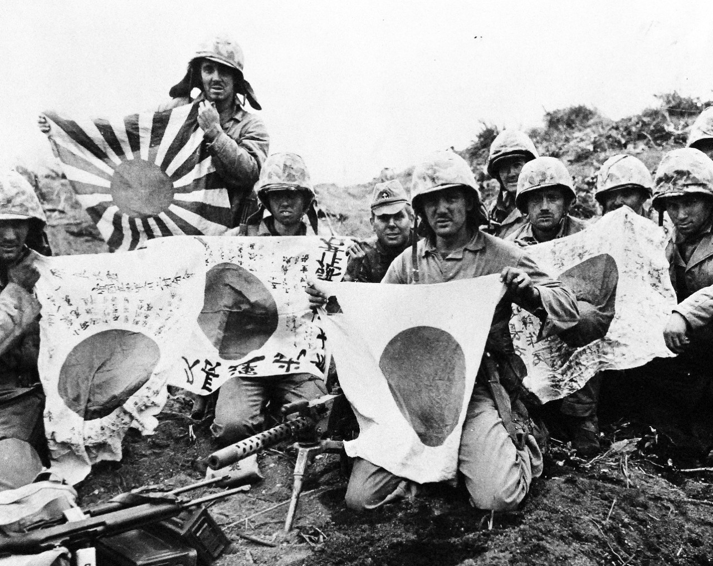
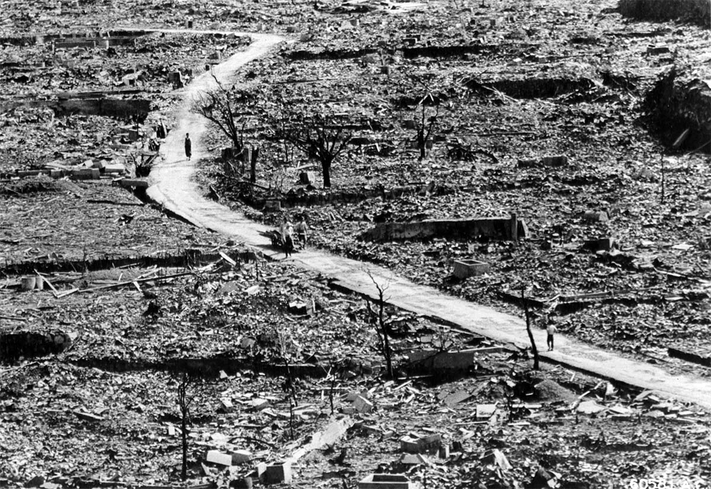

1914 - Assassination of Archduke Franz Ferdinand
In June 1914, Archduke Franz Ferdinand of Austria was assassinated in Sarajevo, a Serbian nationalist an event that would trigger the outbreak of World War I.
Chain Reaction That Led to War:
- Austrian-Hungary blamed Serbia and declared war.
- Russia supported Serbia and mobilized its army.
- Germany supported Austria-Hungary and declared war on Russia.
- Germany declared war on France.
- Germany invaded Belgium to attack France.
- Britain entered the war to defend Belgium.

End of WWI
When the war ended Japan kept watching Germany and U.S. and made their moves




End of War
Utter defeat with unconditional surrender